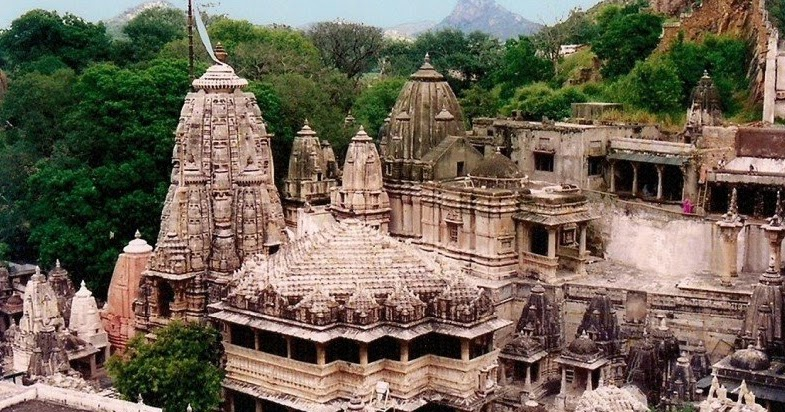

The Eklingji Temple, one of the popular pilgrimage of Rajasthan is located at a distance of 22 km away from Udaipur. It was initially built by Bappa Rawal, the then King Udaipur, on the side of 72 rooms Jain temple which housed a four-faced statue of Adinath, the first Jain saint. This ancient temple with great historic significance is dedicated to Lord Ekalingji, the patron deity of the Mewar clan. Ek means 'one while ling means 'lingam or the life-giving a phallic symbol of Lord Shiva'.Ekalinji Temple is considered to be the actual ruler of the region while the kings serve as the Prime Minister under him. This Holy temple was initially built in 728 AD but due to the passage of time renovations were done by different rulers. Maharana Raimal too renovated this ancient temple in the late 15th and 16th centuries.
